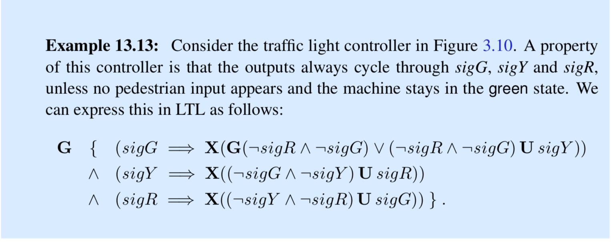

Errata for Lee and Seshia
Introduction to Embedded Systems
— A Cyber-Physical Systems Approach
— Second Edition — MIT Press — 2017
The following are updates to the first printing of the MIT Press book and in version 2.2 of the PDF electronic version:
- Example 4.8 is not a good example of a supervisory control system. A better example is given here and replaces the original example in subsequent printings and versions. Thanks to Clarisse Petua Bosman Barros and Angelo Perkusich for pointing out the deficiencies in the original example.
- On P. 471, "can also be concern" should be "can also be a concern".
- Example 13.13 does not correctly take into account the possibility that the traffic light controller
in Figure 3.10 may stay in the green state (if no pedestrian arrives). A corrected version is shown below.
Thanks to Wilmer Ciasullo for pointing this out.
